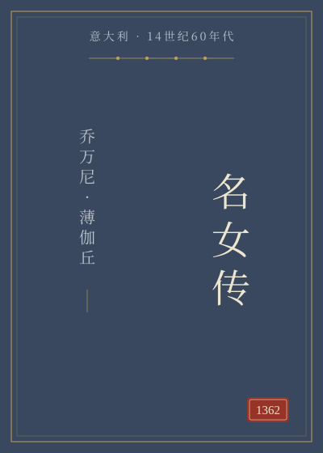
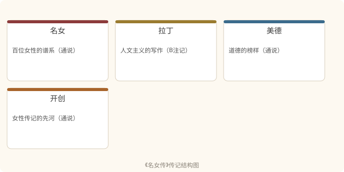

名女传
一、基本信息
| 作者 | 薄伽丘 |
|---|---|
| 成书/出版 | 作者页注记：Britannica——名女传（拉丁人文主义著作——年份通说待核） Giovanni Boccaccio — Encyclopaedia Britannica (by Umberto Bosco)（百科全书） |
| 国别/地区 | 意大利 |
| 时代 | 近代 · 14世纪60年代 |
| 体裁 | 传记集 |
| 语言 | 拉丁语 |

《名女传》传记结构图（主题·结构图）
二、创作背景
作者页注记：异教诸神谱系、名女传——'拉丁人文主义著作（Britannica）'。
Britannica：薄伽丘——《十日谈》作者（作者页语境）。
题材（通说待核）：106（或104）位著名女性的传记——从夏娃到当代。
三、内容脉络
（通说待核）女性的传记序列：美德与恶行的榜样。
（通说待核）人文主义的女性观及其矛盾。
四、主要人物表
| 人物 | 身份 | 说明 |
|---|---|---|
| 众名女 | —— | （通说待核） |
五、主题与艺术特点
- 女性传记的开创（通说待核）。
- 人文主义的拉丁写作（B注记）。
- 美德与恶行的道德谱系（通说待核）。
六、影响与评论
- Britannica：'拉丁人文主义著作'（作者页注记）。
Giovanni Boccaccio — Encyclopaedia Britannica (by Umberto Bosco)（百科全书） - Britannica：薄伽丘《十日谈》为代表作（作者页交叉）。
Giovanni Boccaccio — Encyclopaedia Britannica (by Umberto Bosco)（百科全书）
七、阅读建议
难点
- 拉丁语。
- 古典与中世纪的传记传统。
- 《名女传》中译本（人民文学等——通说待核）。
- 拉丁文原版（公有领域）。
《十日谈》后的学术侧面。
八、待核实
- 篇数（106/104说）核对（通说）。
- 1361-62年写作年份待核。
- 首个专写女性的传记集说法待核。
本页主要来源
相关作品：十日谈特洛伊罗斯与克丽西达训诫小说集